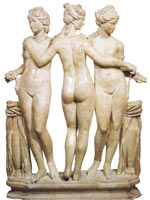

Харити, в давньогрецькій міфології богині благодіянь. Харити - дочки Зевса і океаніди Еврінома, втілювали радісне, добре і вічне молоде початок. Звали цих прекрасних богинь Аглая ("сяюча"), Евфросина ("оре добро") і Талія ("квітуча"). У різних міфах згадуються всілякі варіанти як числа харит, так і їхніх імен. Наприклад, Гомер розповідав про молодшу Хариті Пасіфе, яку Гера пообіцяла віддати заміж - за бога сну Морфея.
У рукописах, що дійшли до наших днів, зустрічаються такі імена харит, як кліть ("бажана"), Фаенна ("блискуча"), Пейто ("переконання") та ін. У деяких випадках імена богинь благодіянь пов'язували з назвами гір і іменували Карпо ("плодоносна"), аукс ("примножувати"), гегемонії ("керівниця") і т. п.
Згідно з численними переказами, харіти були близькі Аполлону. На стінах Делосского храму зображена сцена, де бог тримає трьох харит на своїй долоні, а в пергамском храмі Аполлона і в Афінах перед входом в Акрополь харіти представлені у вигляді римських грацій. Стародавні греки пов'язували харит з процесами зростання і розвитку, що протікають в природі, а також з емоційної та творчою діяльністю людини.